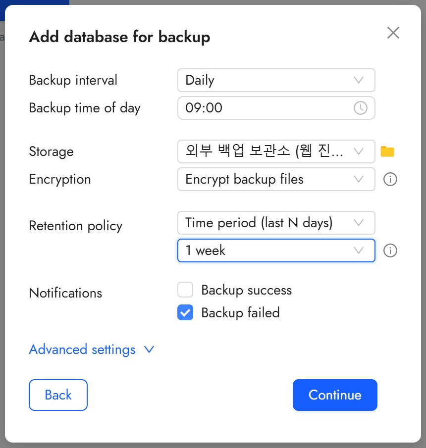
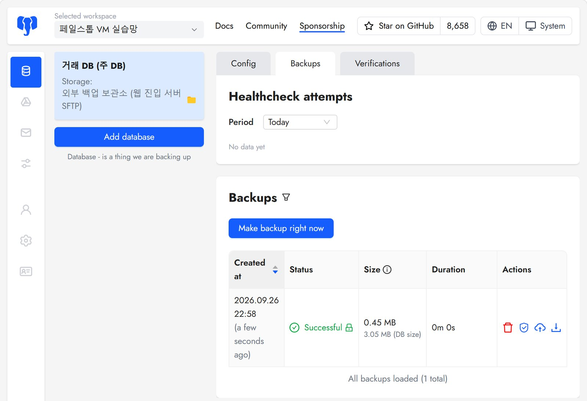
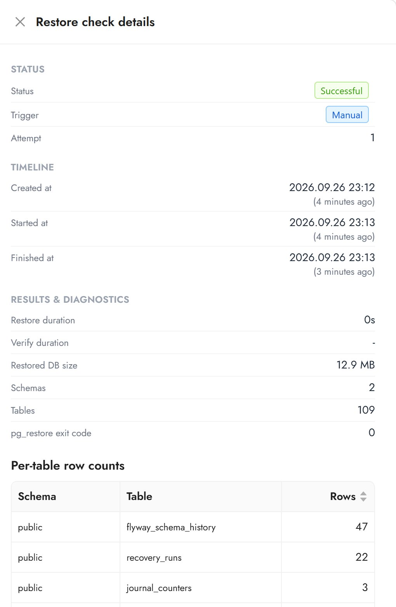

· 백업 · VM 실습망 · failstop
DB 백업을 서버 밖에 보관하고 복원까지 확인했습니다
VM 실습망의 주 DB(DB01)를 Databasus v3.59.0으로 매일 논리 백업하도록 설정했습니다. 백업 파일은 DB 서버 밖, 웹 진입 서버(EDGE01)의 SFTP 전용 계정에 둡니다. 첫 백업이 서버 밖에 도착했는지 확인했고, 복원 검증을 돌려 되살린 DB의 표 수와 행 수를 원본과 맞춰 봤습니다.
- 환경
- VM 실습망(작업 PC 한 대의 VirtualBox 가상망). DB01 192.168.10.31, 관제 서버 OPS01 192.168.10.41, 웹 진입 서버 EDGE01 192.168.10.11
- 구성
- OPS01의 Databasus(Docker) → EDGE01
dbbackup계정(SFTP 전용, chroot) / 매일 09:00, 암호화, 보존 7일 - 결과
- 첫 백업 0.45 MB(원본 3.05 MB) EDGE01 도착, 복원 검증 성공(표 109개,
pg_restore종료 코드 0), 원본과 행 수 일치 - 관련 작업
- failstop
백업을 어디에 둘지
DB 서버 디스크에만 백업을 두면 그 서버가 망가질 때 백업도 같이 잃는데요. 그래서 백업 도구는 관제 서버(OPS01)에, 보관 위치는 웹 진입 서버(EDGE01)에 두었습니다. DB01은 백업을 만들 데이터만 내주고, 파일은 다른 서버로 바로 나갑니다.
Databasus 관리 화면은 OPS01의 루프백(127.0.0.1:4005)에만 열어 두고, 작업 PC에서는 SSH 터널(14005 → 4005)로 접속했습니다. 작업 전 상태는 아래와 같습니다. 보관 폴더는 비어 있고, DB01에는 백업용 계정 databasus_ro가 있습니다.
# 2026-09-26 22:31:07 KST 작업 PC
PS> ssh ops01 "sudo docker ps"
CONTAINER ID IMAGE COMMAND CREATED STATUS PORTS NAMES
f3a06c5f374f databasus/databasus:v3.59.0 "/app/start.sh" 3 minutes ago Up 3 minutes (healthy) 127.0.0.1:4005->4005/tcp databasus
PS> ssh ops01 "sudo ss -lntp | grep 4005"
LISTEN 0 4096 127.0.0.1:4005 0.0.0.0:* users:(("docker-proxy",pid=1332,fd=8))
PS> ssh edge01 "sudo ls -la /srv/db-backup/databasus"
total 0
drwx------. 2 dbbackup dbbackup 6 Sep 22 14:40 .
drwxr-xr-x. 4 root root 91 Sep 22 14:39 ..끊겨 있던 SFTP 경로 다시 열기
같은 날 pfSense를 경계형(NAT 라우터)으로 바꾸면서 OPS01의 host-only 주소가 없어졌습니다. EDGE01의 sshd는 dbbackup@192.168.56.41만 받도록 되어 있었고, nftables도 host-only 관리 대역의 22번만 열고 있어서 예행 때 만든 SFTP 경로가 끊긴 상태였습니다. 출발지를 OPS01의 lab-lan 주소로 바꾸고, 방화벽에는 그 주소의 22번만 따로 열었습니다. 네트워크에서는 OPS01의 22번만 허용하고, 어떤 계정으로 들어올 수 있는지는 sshd가 제한합니다.
# EDGE01 /etc/ssh/sshd_config.d/30-db-backup.conf
AllowUsers ops@192.168.56.0/24 dbbackup@192.168.10.41
Match User dbbackup
ChrootDirectory /srv/db-backup
ForceCommand internal-sftp
AllowTcpForwarding no
X11Forwarding no
PermitTTY no
PubkeyAuthentication yes
# EDGE01 /etc/vm-lab/firewall.d/30-db-backup-sftp.nft
add rule inet vmlab roles iifname "enp0s8" ip saddr 192.168.10.41 tcp dport 22 \
ct state new counter accept comment "Databasus 백업 SFTP(OPS01)"적용 스크립트는 sshd -t와 nft -c로 문법을 먼저 검사한 뒤에만 reload합니다. Databasus 저장소 화면에는 인증 방식이 Password로 표시되지만, EDGE01은 이 계정에 공개키 인증만 허용합니다.
백업 일정과 읽기 전용 계정 경고
백업은 매일 09:00에 논리 백업으로 돌고, 파일은 암호화해 7일 동안 보존합니다. 실패 알림은 켜 두었지만 알림을 받을 대상(Teams 등)은 아직 연결하지 않았습니다.

DB를 등록할 때 Databasus가 databasus_ro에 쓰기 가능한 권한 TEMP와 EXECUTE (SECURITY DEFINER)가 남아 있다고 경고했습니다. DB01에서 확인해 보니 이 계정이 실행할 수 있는 SECURITY DEFINER 함수는 create_balance_for_account 등 네 개였습니다. 저장소의 V47.1 마이그레이션이 PUBLIC 실행 권한을 회수하는 바로 그 함수들인데, VM의 DB01에는 V47.1이 적용되어 있지 않았습니다. TEMP는 PostgreSQL 기본값으로 PUBLIC에 열려 있습니다. 이번에는 원인만 기록해 두고 진행했고, V47.1 적용과 TEMP 권한 정리는 하지 않았습니다.
첫 백업이 서버 밖에 도착했는지
22:58에 첫 백업이 성공했습니다. 크기는 0.45 MB(DB 3.05 MB)입니다.

그래서 EDGE01에서 파일과 sshd 로그를 따로 봤습니다. 22:58:13에 OPS01(192.168.10.41)에서 internal-sftp로 접속한 기록이 있고, 474,053바이트 백업 파일과 메타데이터가 보관 폴더에 들어와 있습니다. DB01 쪽 /var/lib/pgsql/17/backups/에는 아무것도 나오지 않았습니다.
# 2026-09-26 22:59:00 KST
PS> ssh edge01 "sudo ls -la /srv/db-backup/databasus"
-rw-r--r--. 1 dbbackup dbbackup 474053 Sep 26 22:58 거래_DB_(주_DB)-20260926-135813-….
-rw-r--r--. 1 dbbackup dbbackup 174 Sep 26 22:58 거래_DB_(주_DB)-20260926-135813-….metadata
PS> ssh edge01 "sudo journalctl -u sshd --since today | grep dbbackup | tail -n 3"
Sep 26 22:58:13 edge01.lab sshd-session[1554]: Starting session: forced-command (config) 'internal-sftp' for dbbackup from 192.168.10.41 port 51040 id 0 [postauth]
…
PS> ssh db01 "sudo ls /var/lib/pgsql/17/backups/ 2>/dev/null; df -h /var/lib/pgsql | tail -n 1"
/dev/sdb1 20G 494M 20G 3% /var/lib/pgsql복원 검증
Databasus의 복원 검증 에이전트를 OPS01에 설치하고 수동으로 한 번 돌렸습니다. 백업 파일이 있어도 복원이 안 되면 쓸 수 없으니까요. 에이전트는 임시 PostgreSQL 컨테이너에 백업을 복원한 뒤 결과를 보고합니다. 이 임시 이미지가 Docker Hub에 있어서, pfSense LAN 규칙 '패키지 저장소 443(점검 때만 켬)'을 23:03:28에 켜고 이미지를 받은 뒤 23:04:54에 다시 껐습니다. 끈 뒤에는 OPS01에서 외부 443이 막히는 것도 확인했습니다.

pg_restore 종료 코드는 0입니다.검증 화면의 숫자를 원본 DB와 대조했습니다. DB01의 public 104개와 harness 5개를 합하면 109개로 맞고, 세 표의 행 수도 47, 22, 3으로 같습니다. 검증이 끝난 뒤 OPS01에는 Databasus 컨테이너만 남았습니다.
# 2026-09-26 23:17:41 KST
PS> ssh db01 "sudo -u postgres psql -d exchange -c '\dt public.*' | tail -n 2"
(104 rows)
PS> ssh db01 "sudo -u postgres psql -d exchange -c '\dt harness.*' | tail -n 2"
(5 rows)
PS> ssh db01 "sudo -u postgres psql -d exchange -c 'select (select count(*) from flyway_schema_history) flyway, …'"
flyway | recovery_runs | journal_counters
--------+---------------+------------------
47 | 22 | 3
PS> ssh ops01 "sudo docker ps -a"
CONTAINER ID IMAGE COMMAND CREATED STATUS PORTS NAMES
f3a06c5f374f databasus/databasus:v3.59.0 "/app/start.sh" 49 minutes ago Up 49 minutes (healthy) 127.0.0.1:4005->4005/tcp databasus확인하지 못한 것과 남은 일
VM의 거래 DB에는 마켓, 주문, 원장 데이터가 0건입니다. 스키마와 기존 행이 복원되는 것까지는 확인했습니다. 거래 데이터가 많은 상태에서의 복원 시간과 데이터 대조는 하지 않았고, 물리 백업과 PITR도 켜지 않았습니다.
복원 검증 에이전트는 systemd 유닛 없이 데몬으로만 떠 있어서 OPS01을 재부팅하면 다시 켜야 합니다. 에이전트 토큰은 read -s로 입력했고, 에이전트는 설정 파일과 로그에 토큰 앞 8자만 남깁니다. 두 파일 권한은 0600으로 맞췄습니다. 저장소를 등록할 때 SFTP 개인키가 작업 PC의 클립보드와 브라우저를 한 번 거쳤다는 점도 기록에 남겨 두었습니다.